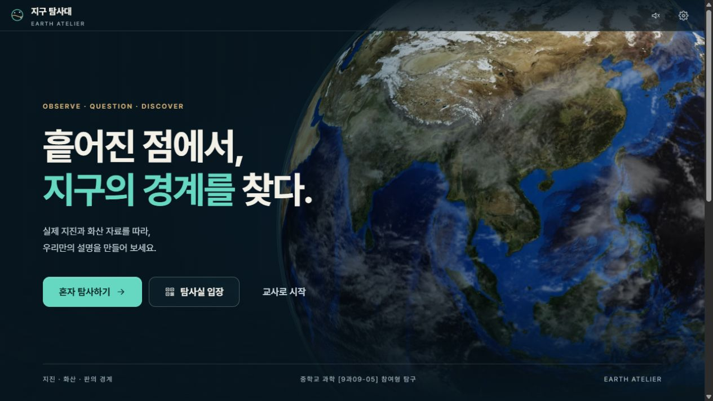
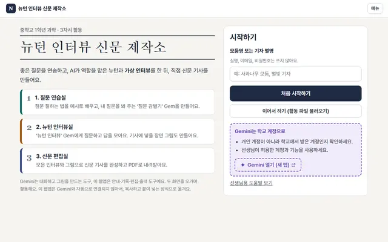
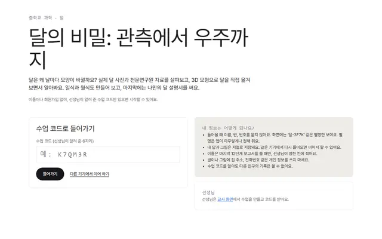
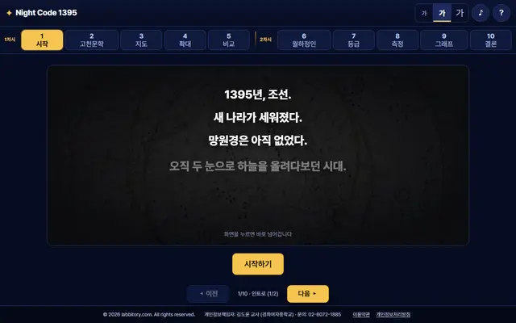
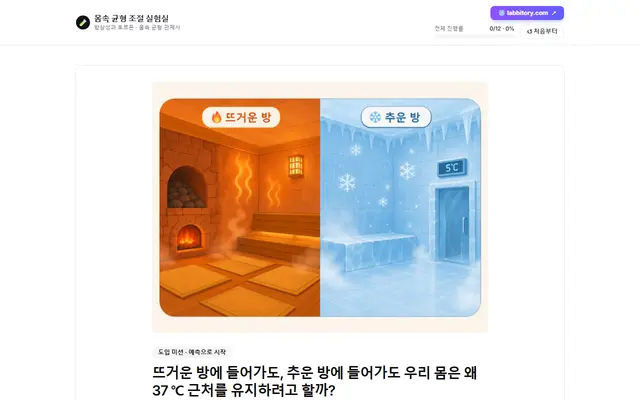
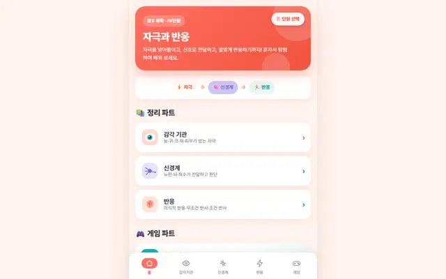

중학교 과학 학습
수업에 바로 활용하는 과학 콘텐츠
마음에 드는 내용을 눌러 바로 시작해 보세요.

중학교 과학 · 지진·화산과 판의 경계
지구 탐사대
실제 지진과 화산 자료를 살펴보고 판의 경계를 직접 그린 뒤, 새로운 증거를 바탕으로 설명을 고치는 탐구 활동이에요. 혼자 또는 학급 탐사실에서 참여할 수 있어요.
중학교들어가기 →
지구 탐사대 · 저장·전송 안내
1학년 · 뉴턴 가상 인터뷰
뉴턴 인터뷰 신문 제작소
좋은 질문을 연습하고, AI가 맡은 뉴턴과 가상 인터뷰를 한 뒤 직접 신문 기사를 완성해 PDF로 내려받는 3차시 활동이에요.
1학년
들어가기 →
뉴턴 인터뷰 신문 제작소 · 저장·전송 안내
1학년 · 달의 위상 변화와 일식·월식
달의 비밀: 관측에서 우주까지
실제 달 사진과 천문연구원 자료를 살펴보고, 3D 모형으로 달을 직접 움직이며 위상 변화와 일식·월식을 탐구한 뒤 나만의 달 설명서를 써요.
1학년
들어가기 →
달의 비밀: 관측에서 우주까지 · 저장·전송 안내
2학년 · 별과 우주
Night Code 1395
국보 천상열차분야지도의 별 자국 크기를 직접 재어 “밝은 별일수록 크게 새겼다”는 규칙을 스스로 발견하는, 과학과 역사가 만나는 2차시 수업이에요.
2학년
들어가기 →
Night Code 1395 · 저장·전송 안내
3학년 · 항상성과 호르몬
몸속 균형 조절 실험실
뜨거운 방·추운 방 예측에서 출발해 체온과 혈당량(인슐린·글루카곤) 조절 실험, 호르몬 도감으로 우리 몸의 항상성 원리를 익혀요.
3학년
들어가기 →
몸속 균형 조절 실험실 · 저장·전송 안내
3학년 · 자극과 반응
자극과 반응
감각 기관 → 신경계 → 반응(무조건 반사·조건 반사)을 정리 파트에서 차근차근 익히고, 게임 파트로 복습하며 혼자서 탐험하는 학습 앱이에요.
3학년
들어가기 →
자극과 반응 · 저장·전송 안내